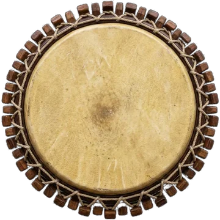
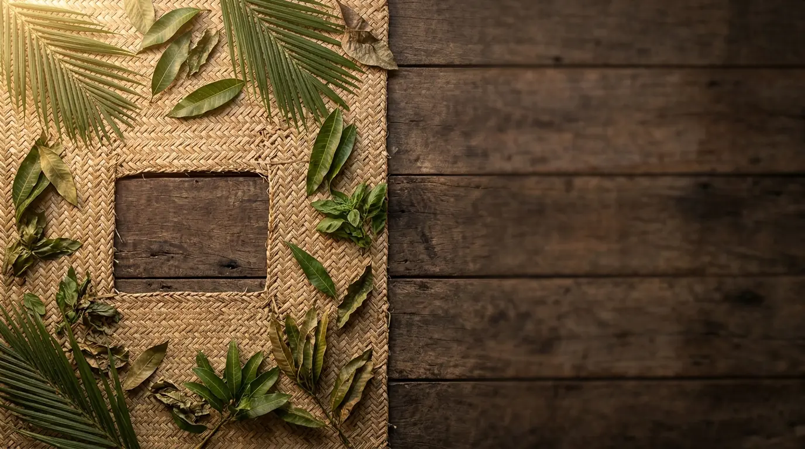
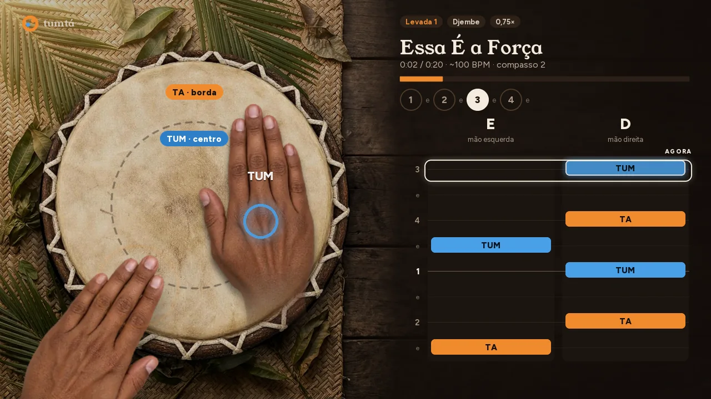
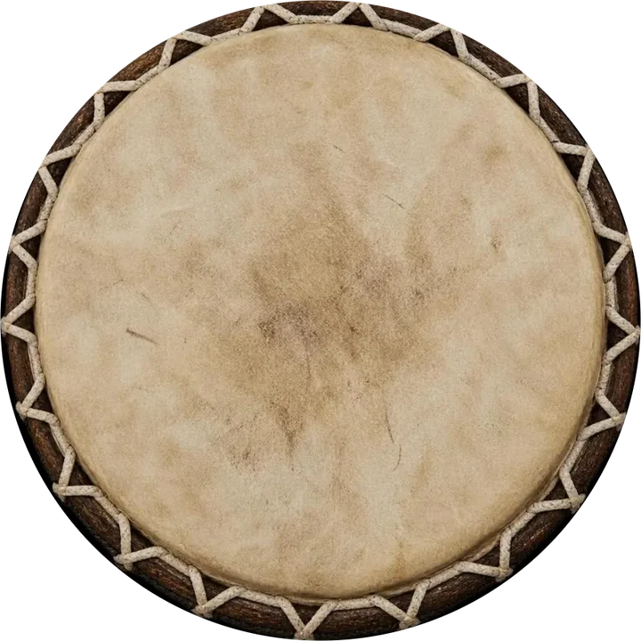
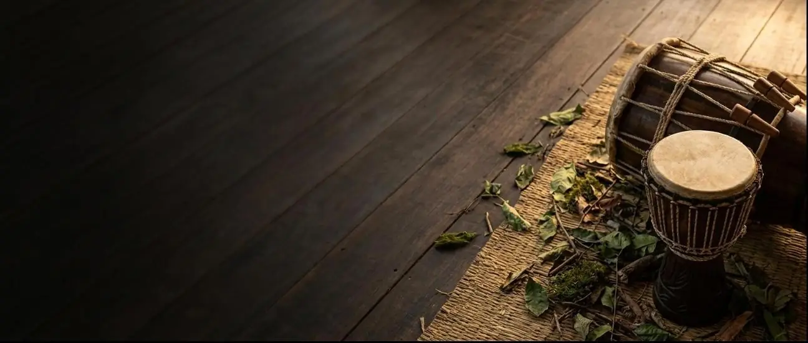

Atabaque
Aro de madeira e cravelhas. Para os toques de candomblé, umbanda, ijexá, samba de roda e capoeira.

Mande uma música ou cole o link do YouTube. O Tumtá escuta o tambor, encontra cada TUM e cada TA e gera vídeo-aulas mostrando onde bater e com qual mão, levada por levada.
Nada de configurar nada. O programa separa o som do tambor do resto da música e faz o trabalho pesado.
Cole o link do YouTube ou arraste um arquivo: mp3, wav, m4a ou até um vídeo gravado na roda.
Escolha o tambor que você toca e, se quiser, deixe a música mais lenta (0,5× ou 0,75×) pra treinar com calma.
O vídeo completo, uma aula passo a passo de cada levada e os cortes de cada trecho da música.
O tambor visto de cima, as duas mãos tocando e os próximos toques subindo, pra você se preparar antes de bater.

A música toca enquanto as mãos mostram cada batida no lugar certo do couro: palma no centro para o TUM, dedos na borda para o TA.
O Tumtá descobre as levadas que se repetem na música e monta uma aula para cada uma, com metrônomo e contagem antes de cada passo.
Cada parte da música em que uma levada se mantém vira um vídeo curto, pra treinar só aquele pedaço. E a partitura vai junto em texto, compasso por compasso, com a mão de cada toque.
O jeito mais comum de começar no atabaque e no djembe. Quem já separa o aberto do tapa pode ligar o modo de três sons.

O vídeo mostra o tambor que você escolher, visto de cima, com as mãos no lugar de cada toque.

Aro de madeira e cravelhas. Para os toques de candomblé, umbanda, ijexá, samba de roda e capoeira.
Corda trançada em volta do aro. Para os ritmos da África do Oeste, rodas de percussão e música brasileira.
Uma janela só: escolhe, gera e assiste. Dá pra deixar minimizado enquanto os vídeos ficam prontos.




Extraia o zip, abra o Tumta.exe e mande a primeira música. Os vídeos ficam em Documentos\Tumta.
Na primeira vez, pode aparecer “O Windows protegeu o computador”, porque o programa não tem assinatura digital paga.
Sim. É só baixar, extrair o zip e abrir o Tumta.exe. Não tem cadastro nem propaganda.
Funciona com músicas que têm atabaque, djembe ou outro tambor de mão tocando. O programa separa o som do tambor do resto da música antes de procurar os toques. Quanto mais o tambor aparece na gravação, melhor fica a partitura.
Só para baixar uma música por link do YouTube. Com um arquivo do computador, tudo funciona sem internet.
Uma música de 5 minutos leva de 15 a 25 minutos para gerar tudo (vídeo completo, aulas e trechos), dependendo do computador. Dá para deixar a janela minimizada.
O aviso “O Windows protegeu o computador” aparece porque o programa não tem assinatura digital paga. Clique em “Mais informações” e depois em “Executar assim mesmo”.
TUM é o som grave, com a palma da mão no centro do couro. TA é o som da borda, com os dedos batendo perto do aro. No modo avançado, a borda se divide em TOM (aberto, cheio) e TA (tapa, som estalado).
Por enquanto só no Windows 10 e 11. Os vídeos gerados são MP4 comuns e podem ser assistidos em qualquer aparelho.